<!doctype html>
<html lang="ja">
    
</html>

	<head>

	    
<meta charset="utf-8">
  <meta name="viewport" content="width=device-width,initial-scale=1.0">

<meta NAME=”ROBOTS” CONTENT=”NOINDEX,NOFOLLOW,NOARCHIVE”>


<script src="//code.jquery.com/jquery-2.2.4.min.js"></script>
<script>
//共通パーツ読み込み
  $(function() {
       $("#side").load("side.html");

});
</script>

 <title>宇宙</title>
<link rel="stylesheet" href="style.css">


 	</head>

 	<body>

<div id="wrapper">
<div id="side"></div>
  <div class="right-column"><br><br>
 <table>
	<tbody		<tr>
>
			<td>
			
			</td>
		</tr>
		<tr>
			<td>
				


<p>〇ごった煮のページ1</p><br><br>


<p class ="gazou2">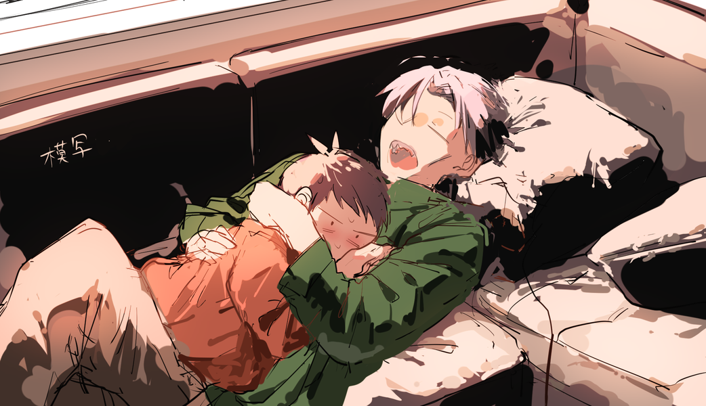</p>

<p class ="gazou2">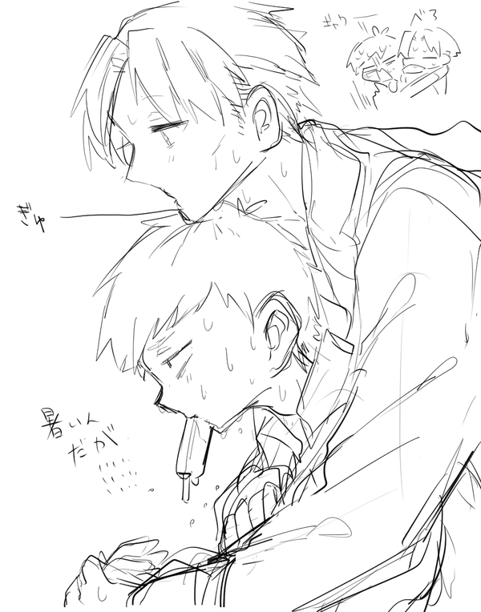</p>
<p class ="gazou2">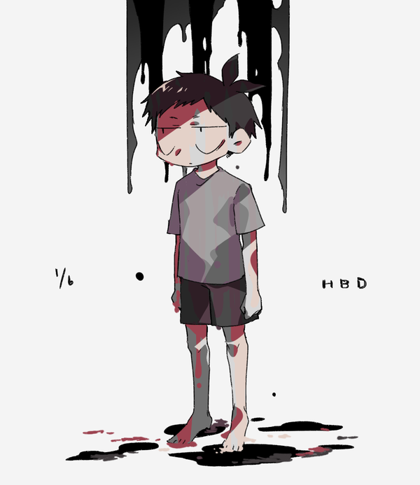</p>
<p>1/6はジャックの誕生日</p>

<p class ="gazou2">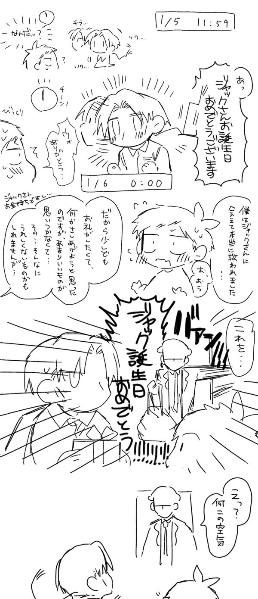</p>


<p class ="gazou2">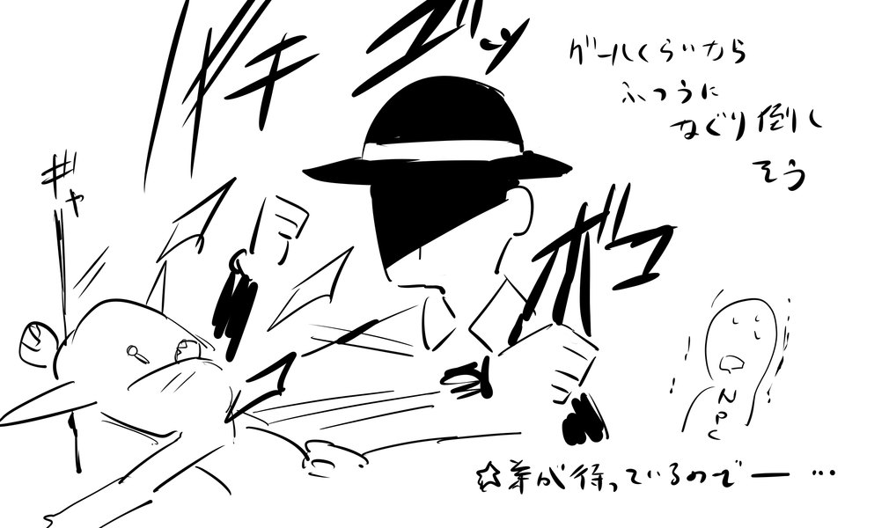</p>
<p>もし兄がPCになったら</p>

<p class ="gazou2">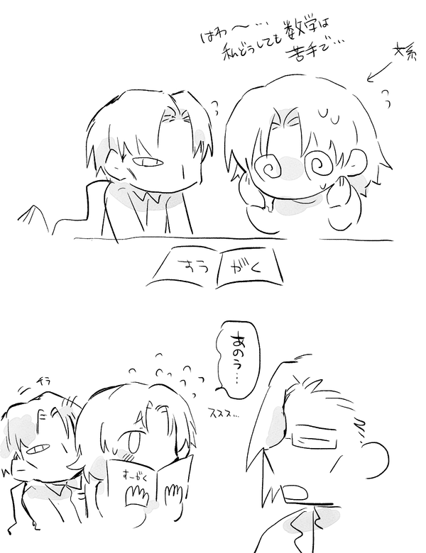</p>
<p>地獄で再開したときの家族</p>

<p class ="gazou2"></p>
<p>料理ができない不定形生命体</p>

<p class ="gazou2"></p>
<p class ="gazou2"></p>
<p class ="gazou2">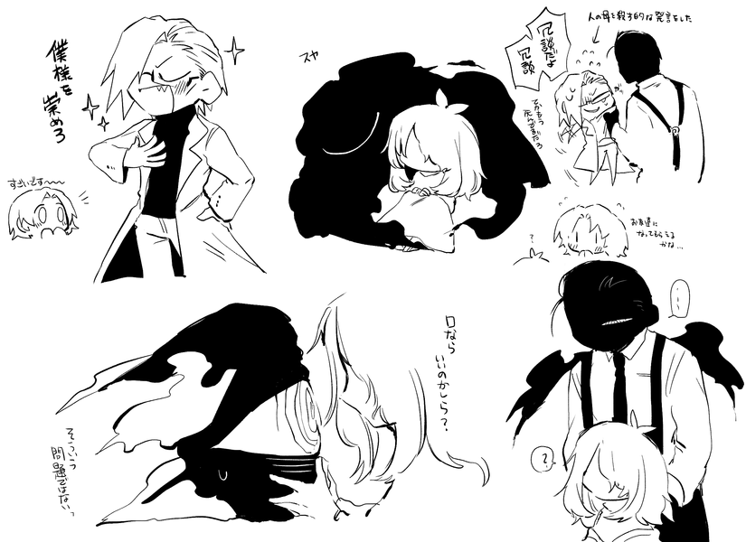</p>

<p class ="gazou2"></p>
<p>※「早寝早起き妖怪ジジイ」は白父の発言</p>

<p class ="gazou2">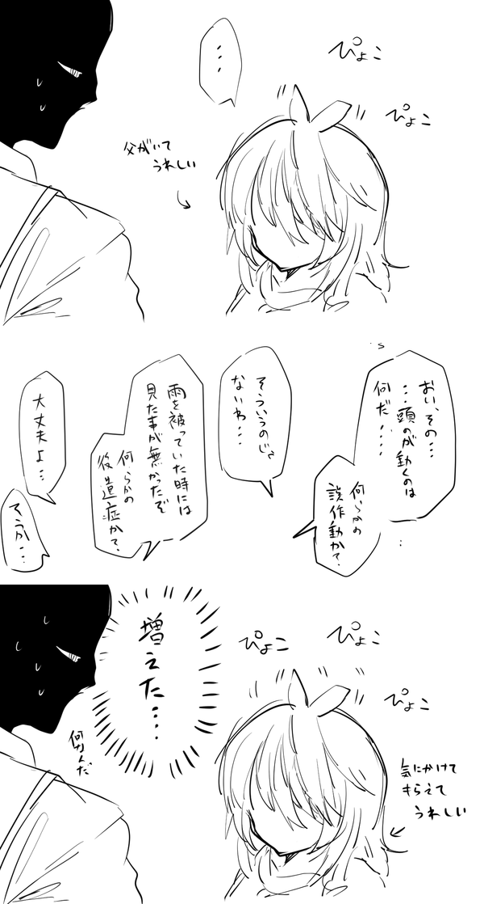</p>
<p class ="gazou2"></p>
<p class ="gazou2">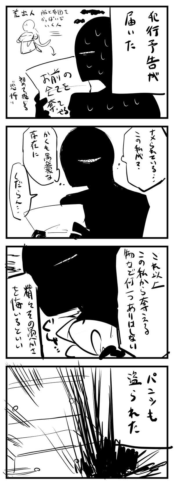</p>

<p class ="gazou2"></p>

<p class ="gazou2"></p>

<p class ="gazou2"></p>
<p>すみません</p>

<p class ="gazou2">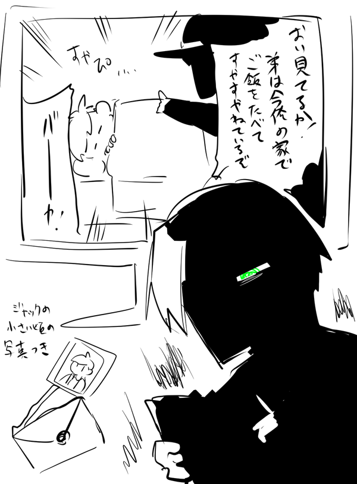</p>

<p class ="gazou2">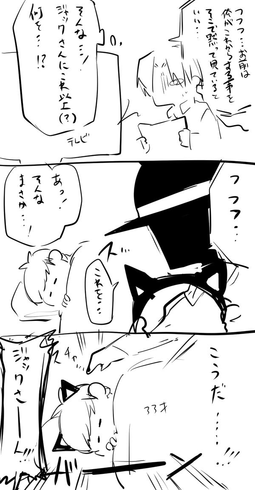</p>
<p>NTRビデオレターという概念について</p>

<p class ="gazou2"></p>
<p>お見舞い</p>

			</td>
		</tr>
	</tbody>
</table>


  </div>
</script>
</div>


</body>

 </html>
